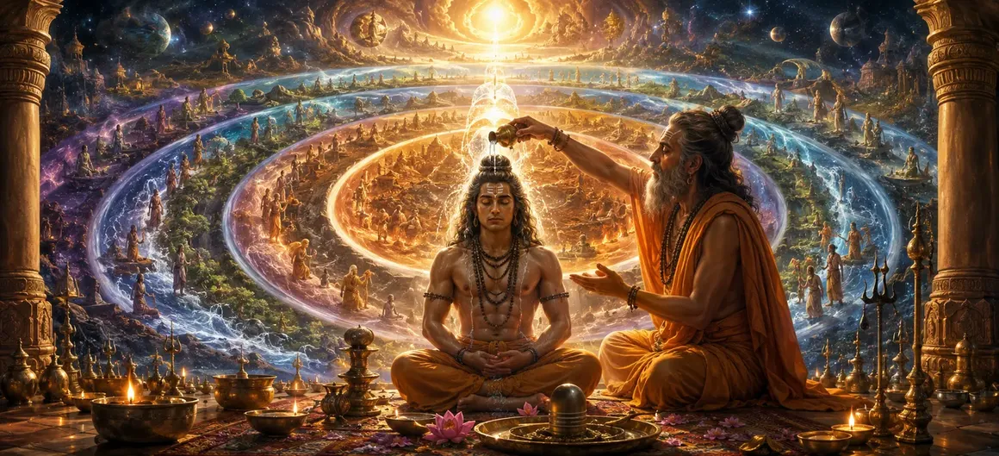

छह मार्गों की शुद्धि
वायवीय संहिता का तिरपनवाँ अध्याय मानव सूक्ष्म शरीर के भीतर छह ब्रह्मांडीय और ऊर्जावान मार्गों (अधवस) की गहन आध्यात्मिक शुद्धि की पड़ताल करता है।
ऋषि वायु बताते हैं कि कैसे गुरु शिष्य को भौतिक बंधन से मुक्त करने के लिए कलात्व, पद, मंत्र, बुवना, तत्त्व और वर्ण के सूक्ष्म मार्गों को साफ करते हैं।
यह जटिल प्रक्रिया उन्नत शैव गूढ़ अभ्यास की आधारशिला बनाती है।
अध्याय 53 की मुख्य बातें
छह अधवा
अभिव्यक्ति को नियंत्रित करने वाले ब्रह्मांडीय मार्ग।
सूक्ष्म सफाई
आंतरिक ऊर्जावान चैनलों को शुद्ध करना।
गूढ़ ज्ञान
ऋषि वायु द्वारा उन्नत योगिक और अनुष्ठानिक शिक्षाएँ।
कर्म विघटन
गहरे बैठे कर्म चिह्नों को जलाना।
मंत्र अनुनाद
सूक्ष्म तत्वों को दिव्य स्पंदनों के साथ संरेखित करना।
आगे का रास्ता
अध्याय 54 में आकांक्षी के अभिषेक की तैयारी।
इस अध्याय में मुख्य विषय
छह अध्वाओं की प्रकृति (ब्रह्मांडीय पथ)
ऋषि वायु बताते हैं कि सृष्टि छह मूलभूत ब्रह्मांडीय मार्गों पर संरचित है, जिन्हें अधवस के नाम से जाना जाता है, जो व्यक्तिगत आत्मा को सांसारिक अस्तित्व से बांधते हैं।
इन मार्गों को शुद्ध करने से भ्रम की संरचना नष्ट हो जाती है और आंतरिक चेतना मुक्त हो जाती है।
तत्त्व और कला पथ की शुद्धि
पहले चरण में केंद्रित ध्यान अनुष्ठानों के माध्यम से तत्व (अस्तित्व के घटक सिद्धांत) और कलास (समय और ऊर्जा के चरण) को साफ करना शामिल है।
यह साधक को लौकिक क्षय और तात्विक बाधाओं के अत्याचार से मुक्त करता है।
भुवनम और पद पथ की सफाई
भुवनम (लोक/क्षेत्र) और पद (मंत्र के शब्द/खंड) को क्षेत्रीय जुड़ाव और भाषाई द्वंद्व से परे जाने के लिए शुद्ध किया जाता है।
दीक्षा लेने वाला सामान्य सीमाओं से ऊपर उठकर सार्वभौमिक जागरूकता की ओर बढ़ता है।
मंत्र और वर्ण का संरेखण
मंत्र (पवित्र सूत्र) और वर्ण (मूल अक्षर/स्वर) के अंतिम मार्ग भगवान शिव की सर्वोच्च चेतना के साथ सामंजस्यपूर्ण हैं।
सूक्ष्म शरीर के भीतर की प्रत्येक ध्वनि दिव्य अनुनाद का साधन बन जाती है।
कर्म बंधनों को ख़त्म करने में गुरु की भूमिका
दैवीय माध्यम के रूप में कार्य करते हुए, गुरु आध्यात्मिक ऊर्जा को छह अध्वाओं में बंधी कर्म संबंधी गांठों को भंग करने के लिए निर्देशित करते हैं।
इस विशिष्ट प्रक्रिया के लिए अत्यधिक अनुग्रह, सटीकता और निपुणता की आवश्यकता होती है।
पथ शुद्धि से मुक्ति की प्राप्ति
एक बार जब छह मार्ग पूरी तरह से शुद्ध हो जाते हैं, तो आत्मा अपनी भारी नश्वर सीमाओं को त्याग देती है और शिव-चेतना के शुद्ध आनंद का अनुभव करती है।
साधक आध्यात्मिक स्वतंत्रता में दृढ़ता से स्थापित हो जाता है।
अध्याय 54 की ओर (आकांक्षी का अभिषेक)
अध्याय 53 में छह मार्गों की शुद्धि की व्याख्या करने के बाद, ऋषि वायु अध्याय 54, 'साधक का अभिषेक' सुनाने की तैयारी करते हैं।
यह अगला अध्याय उन्नत आध्यात्मिक प्राप्ति की तैयारी कर रहे समर्पित साधकों के लिए अंतिम अभिषेक संस्कार का विवरण देगा।
अध्याय 53 की मुख्य शिक्षाएँ
छह अधवा
ब्रह्मांडीय ऊर्जावान मार्गों को समझना।
तत्त्व शुद्धि
मूलभूत अस्तित्व सिद्धांतों को शुद्ध करना।
कला निपुणता
समय और लौकिक क्षय को पार करना।
वर्ण एवं मंत्र
ध्वनि और पवित्र अक्षरों का सामंजस्य।
कर्म मुक्ति
सूक्ष्म कर्म संबंधी गांठों को विघटित करना।
आकांक्षी प्रस्तावना
अध्याय 54 में आकांक्षी अभिषेक की स्थापना।
आध्यात्मिक चिंतन
सच्ची शुद्धि भौतिक शरीर से परे तक पहुँचती है, सूक्ष्म ऊर्जावान चैनलों को भेदकर आत्मा को शाश्वत दिव्य प्रकाश में मुक्त करती है।
अध्याय 53 का संदेश जीना
आध्यात्मिक शरीर रचना की गहन गहराई और आंतरिक चेतना को शुद्ध करने के लिए आवश्यक सावधानीपूर्वक देखभाल की सराहना करें।
आंतरिक सद्भाव बनाए रखने के लिए अपने विचारों, वाणी और कार्यों को उच्च आध्यात्मिक सिद्धांतों के अनुरूप रखें।
आंतरिक परिवर्तन के सूक्ष्म क्षेत्रों में यात्रा करते समय गुरु के मार्गदर्शन पर भरोसा रखें।
प्रमुख आध्यात्मिक अवधारणाएँ
सृष्टि के छह ब्रह्मांडीय और ऊर्जावान रास्ते।
ऑन्टोलॉजिकल सिद्धांतों का शुद्धिकरण।
समय और चरणों के मार्गों की सफाई।
पवित्र अक्षरों एवं सूत्रों का सामंजस्य।
अस्तित्व के ब्रह्मांडीय स्तरों की शुद्धि।
सर्वोच्च चेतना में पथों का विलीनीकरण।
अध्याय सारांश
वायवीय संहिता अध्याय 53 में छह मार्गों की शुद्धि का विवरण दिया गया है, जो सूक्ष्म शरीर के भीतर छह ब्रह्मांडीय अध्वाओं (तत्व, कला, भुवनम, पद, मंत्र और वर्ण) की आध्यात्मिक सफाई की व्याख्या करता है। इस उन्नत योगिक प्रक्रिया के माध्यम से, गुरु कर्म बंधनों को तोड़ते हैं, अध्याय 54, 'आकांक्षी का अभिषेक' के लिए मंच तैयार करते हैं।
अक्सर पूछे जाने वाले प्रश्न
1. वायवीय संहिता अध्याय 53 का मुख्य विषय क्या है?
अध्याय 53 दीक्षा के सूक्ष्म शरीर के भीतर छह ब्रह्मांडीय और ऊर्जावान मार्गों (अधवस) की आध्यात्मिक शुद्धि पर केंद्रित है।
2. इस अध्याय में उल्लिखित छह मार्ग कौन से हैं?
छह मार्गों (शद-अध्व) में कलात्व, पद, मंत्र, बुवाना, तत्त्व और वर्ण शामिल हैं, जो संपूर्ण ब्रह्मांडीय और भाषाई अभिव्यक्ति को समाहित करते हैं।
3. ऋषियों को छह मार्गों की शुद्धि कौन समझाता है?
ऋषि वायु इन छह मार्गों को शुद्ध करने के लिए गहन योगिक और अनुष्ठानिक प्रक्रियाओं का विवरण देते हैं।
4. अध्याय 53 के बाद नेविगेशन के लिए अगला अध्याय कौन सा है?
नेविगेशन के लिए अगले अध्याय का शीर्षक 'आकांक्षी का अभिषेक' है।
"जब सूक्ष्म शरीर के छह ब्रह्मांडीय मार्ग अनुग्रह और ज्ञान से पूरी तरह से शुद्ध हो जाते हैं, तो व्यक्तिगत आत्मा अपने भ्रम को दूर कर देती है और शिव के असीम प्रकाश में विलीन हो जाती है।"
वायवीय संहिता के माध्यम से जारी रखें
अध्याय 53 छह मार्गों की शुद्धि का समापन करता है। आकांक्षी का अभिषेक जारी रखें।